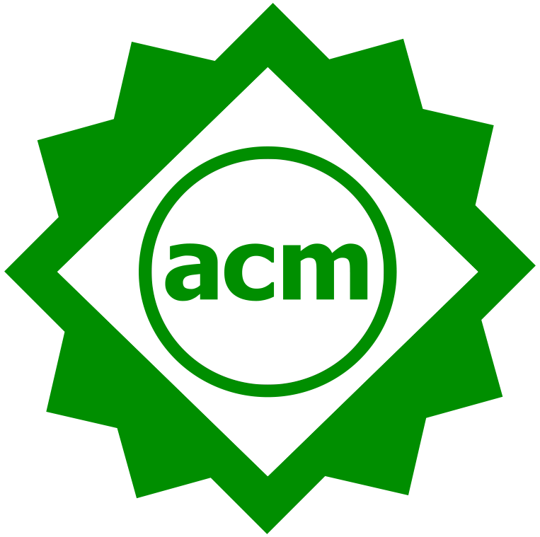
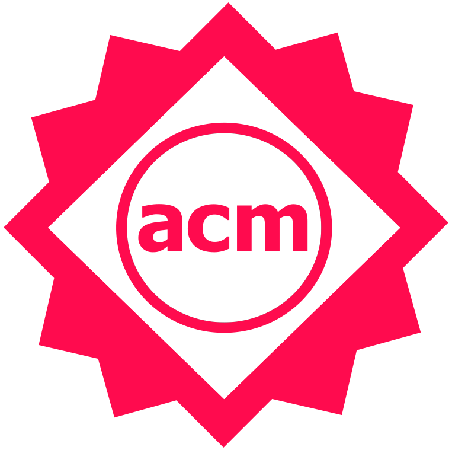

Sotiris Apostolakis
I am currently working at Google on performance analysis and compiler optimizations of warehouse-scale systems. I completed my PhD in Computer Science in 2020 as a member of the Liberty Research group at Princeton University, under the supervision of Prof. David I. August.
My dissertation work focused on compilers, program analysis, and automatic parallelization. During my time at Princeton, I have also worked on system security and computer architecture. During my internships at Facebook (summer 2018) and Intel (summer 2017), I worked on binary analysis.
Before joining Princeton, I earned my Diploma in Electrical and Computer Engineering at the National Technical University of Athens, Greece.
Publications
-
Safer at Any Speed: Automatic Context-Aware Safety Enhancement for Rust   PDF
Natalie Popescu, Ziyang Xu, Sotiris Apostolakis, David I. August, and Amit Levy
Proceedings of the ACM on Programming Languages, Volume 5, Issue OOPSLA (OOPSLA 2021) -
NOELLE Offers Empowering LLVM Extensions
 PDF
PDF
Angelo Matni, Enrico Armenio Deiana, Yian Su, Lukas Gross, Souradip Ghosh, Sotiris Apostolakis, Ziyang Xu, Zujun Tan, Ishita Chaturvedi, David I. August, and Simone Campanoni
ArXiv 2021 -
SCAF: A Speculation-Aware Collaborative Dependence Analysis Framework
PDF
Sotiris Apostolakis, Ziyang Xu, Zujun Tan, Greg Chan, Simone Campanoni, and David I. August
Proceedings of the 41st ACM SIGPLAN Conference on Programming Language Design and Implementation (PLDI 2020) -
Perspective: A Sensible Approach to Speculative Automatic Parallelization
PDF
Sotiris Apostolakis, Ziyang Xu, Greg Chan, Simone Campanoni, and David I. August
Proceedings of the 25th International Conference on Architectural Support for Programming Languages and Operating Systems (ASPLOS 2020) -
Architectural Support for Containment-based Security PDF
Hansen Zhang, Soumyadeep Ghosh, Jordan Fix, Sotiris Apostolakis, Stephen R. Beard, Nayana P. Nagendra, Taewook Oh, and David I. August
Proceedings of the 24th International Conference on Architectural Support for Programming Languages and Operating Systems (ASPLOS 2019) -
MemoDyn: Exploiting Weakly Consistent Data Structures for Dynamic Parallel Memoization PDF
Prakash Prabhu, Stephen R. Beard, Sotiris Apostolakis, Ayal Zaks, and David I. August
Proceedings of the 27th International Conference on Parallel Architectures and Compilation Techniques (PACT 2018) -
Hardware Multithreaded Transactions PDF
Jordan Fix, Nayana P. Nagendra, Sotiris Apostolakis, Hansen Zhang, Sophie Qiu, and David I. August
Proceedings of the 23rd International Conference on Architectural Support for Programming Languages and Operating Systems (ASPLOS 2018) -
Speculatively exploiting cross-invocation parallelism PDF
Jialu Huang, Prakash Prabhu, Thomas B. Jablin, Soumyadeep Ghosh, Sotiris Apostolakis, Jae W. Lee, and David I. August
Proceedings of the 25th International Conference on Parallel Architectures and Compilation Techniques (PACT 2016)
Talks
-
SCAF: A Speculation-Aware Collaborative Dependence Analysis Framework Slides
Video
Abstract
- SPLASH '21, Chicago, IL, USA, October 2021
- PLDI '20, Virtual, June 2020
-
Perspective: A Sensible Approach to Speculative Automatic Parallelization Slides Video
- ASPLOS '20, Virtual, March 2020
- 5th Computing Systems Research Day, NTUA, Athens, Greece, January 2020
-
Containment-based Security Architecture Slides
- Qualcomm Innovation Fellowship Finalists' Day, Qualcomm Headquarters, San Diego, CA, USA, April 2018
-
Collaborative Parallelization Framework Slides
- IBM Programming Languages Day, IBM Thomas J. Watson Research Center, Yorktown Heights, NY, USA, December 2018
-
MemoDyn: Exploiting Weakly Consistent Data Structures for Dynamic Parallel Memoization Slides
- PACT '18, Limassol, Cyprus, November 2018
Teaching
Princeton University
-
Spring 2018: COS 320 - Compiling Techniques (Prof. David August) Teaching Assistant
-
Fall 2017: COS 126 - Computer Science: An Interdisciplinary Approach (Prof. David August) Teaching Assistant
-
Spring 2017: COS 333 - Advanced Programming Techniques (Prof. Brian Kernighan) Teaching Assistant
-
Fall 2016: COS 432 - Information Security (Prof. Nick Feamster) Teaching Assistant
Academic Service
Program Committee, PACT 2021